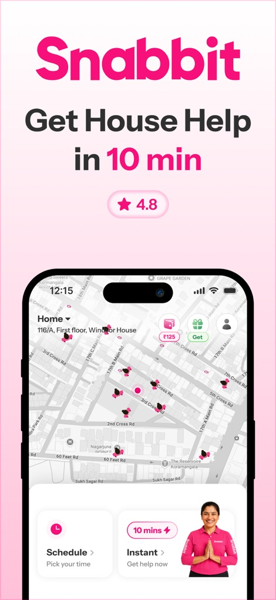
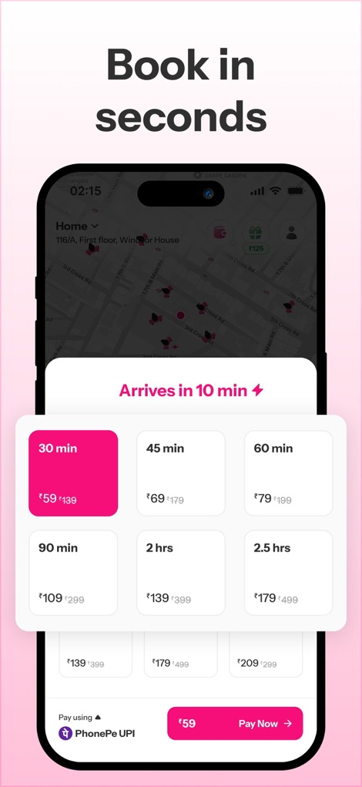
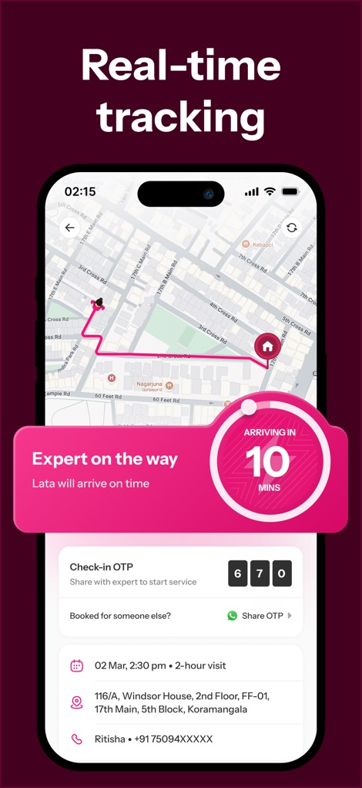

Quick-commerce for home help — a trained professional at your door in ~15 minutes for cleaning, dishwashing, kitchen prep and more, across 5 cities. An independent product-analyst teardown.
Snabbit is quick-commerce for home help — book a chore, a trained helper arrives in ~15 minutes. It scaled from ~400 to 40,000 daily orders in under a year. Like q-commerce, it lives or dies on an SLA (arrival time) and dense standby supply. The analyst job: fulfilment speed, supply utilisation, task-mix AOV, and turning one-off chores into a weekly habit.
Open app → pick a task (cleaning, dishwashing, laundry, kitchen help) → a trained helper stationed nearby arrives in ~15 minutes. It's q-commerce mechanics applied to services: instead of dark stores stocking SKUs, Snabbit pre-positions standby supply in micro-zones so it can hit the speed promise.



Busy urban households that want a chore done right now, not scheduled for tomorrow — the convenience q-commerce trained them to expect.
A margin between what the customer pays per task and what the helper earns, plus higher-frequency subscriptions as repeat forms.
Speed as a moat — dense standby supply rivals can't match without the same order density, and a new high-frequency habit (daily chores).
The ~15-minute promise requires idle standby supply — helpers paid to be available, not just working. That idle time is the central cost, so the whole model turns on supply utilisation (jobs completed per helper-hour) and order density per micro-zone.
To hit 15 minutes you pay helpers for availability. Every point of utilisation — more jobs per helper per shift — converts idle cost into contribution. Density is destiny.
A one-off clean is low-value; a weekly habit (or subscription) is the business. Turning chores into recurring bookings is what makes the standby supply pay back.
This is a q-commerce-style ops problem: utilisation × density × frequency. A point of helper utilisation or a step-up in repeat rate moves the P&L far more than a price change — and both are squarely analytics-and-experiment territory.
Daily orders scaled ~100× in under 12 months, crossing 1M+ monthly jobs by March 2026 — one of the fastest demand ramps in Indian services.
Urban Company owns scheduled premium services; Snabbit (and Pronto) are racing on instant. Different promise, different supply model — and a new high-frequency behaviour.
Snabbit's 4.83★ across 168k ratings is strong for a young app — but it's live in just 5 cities. The thesis is depth-then-expand.
Speed only wins if the economics hold at density. Snabbit's job is to prove utilisation and repeat in its first cities before it spends to expand.
The company facts above are real. The rest is how I'd instrument and grow the product — fulfilment speed, utilisation and frequency in a q-commerce-style services model. Funnel and cohort figures are illustrative frameworks, clearly marked.
One number the org can move, decomposed into the levers a team owns.
The branch that makes or breaks it is fulfilment within SLA — a late or unavailable helper breaks the one promise the whole product is built on.
The leaks are task select → booking (no helper available in time) and the first-job experience (if the SLA or quality slips, they don't come back). Nail fulfilment and the second booking, and frequency compounds into a habit that justifies the standby supply.
Each tied to a lever your post named, with a primary metric and a guardrail so we don't win one number by breaking another.
| Hypothesis | Lever | Primary metric | Guardrail |
|---|---|---|---|
| Zone density tuning — reshape micro-zones & standby rosters to lift on-time fulfilment without over-staffing. | SLA · cost | On-time % at target utilisation | Helper idle cost |
| Subscription / weekly plan — a recurring plan turns one-off chores into a habit. | frequency | Jobs / user / month | Contribution / job |
| Task bundling — "add dishwashing to your cleaning" raises value per visit. | AOV | Jobs per booking, basket value | Completion time |
| First-job quality guarantee — a visible quality/redo promise to lift second-booking rate. | retention | 2nd-booking rate (D30) | Redo / refund cost |
The second-order reads a hiring manager actually wants.
Arrival time is the value proposition. On-time % at a given utilisation is the single most important health metric — it deserves its own real-time dashboard and owner.
Standby supply is paid whether or not it works. The cheapest contribution comes from more jobs per helper-hour via density and batching — not from raising prices.
Explosive order growth is cheap; durable repeat is the test. Whether chores become a weekly subscription habit decides if the standby economics ever pay back.
Note: Funnel, cohort and per-job economics charts are clearly-labelled illustrative frameworks, not reported Snabbit figures. Company facts are real and sourced.
TechCrunch / Bloomberg / Entrackr — ~$56M Series D (Apr 2026) at a ~$350–360M valuation (up from $180M, Oct 2025); ~$112M total raised · scaled ~400 → 40,000 daily orders in <12 months, crossed 1M+ monthly jobs (Mar 2026) · live in 5 cities (MMR, Delhi NCR, Pune, Hyderabad, Bengaluru); ~10–15 min arrival · Apple App Store Search API — live iOS rating (4.83★, 168k). Figures as of 2026.